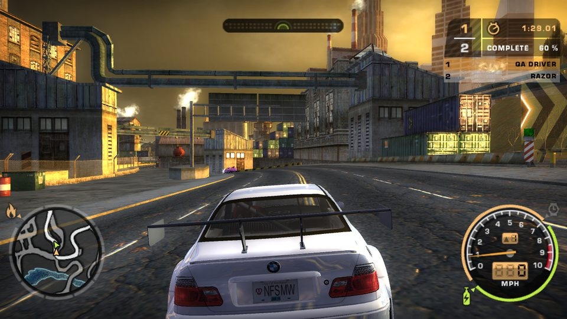
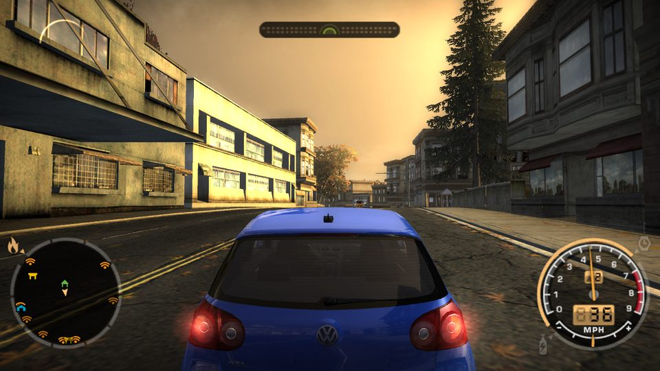
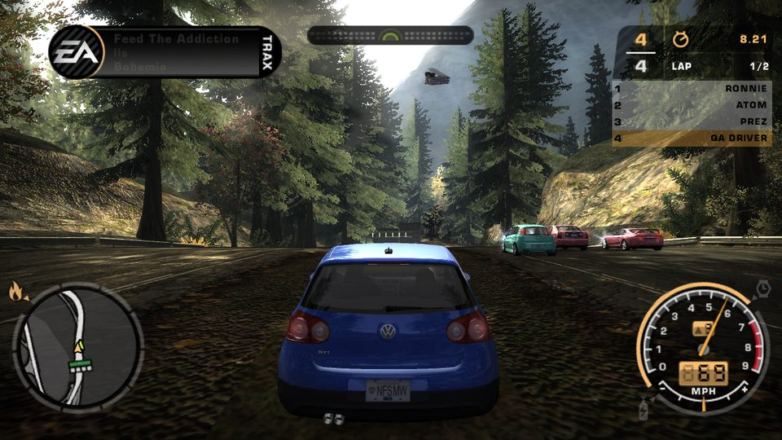
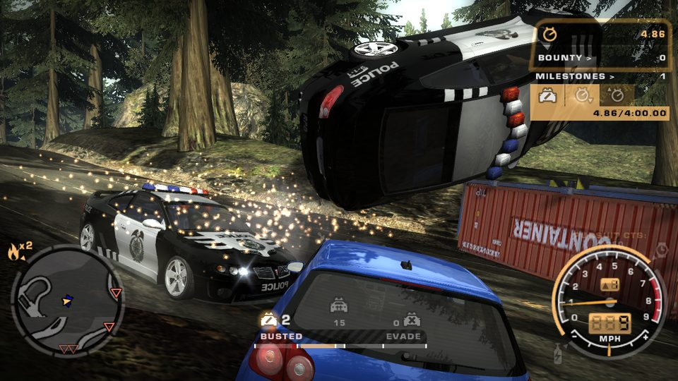
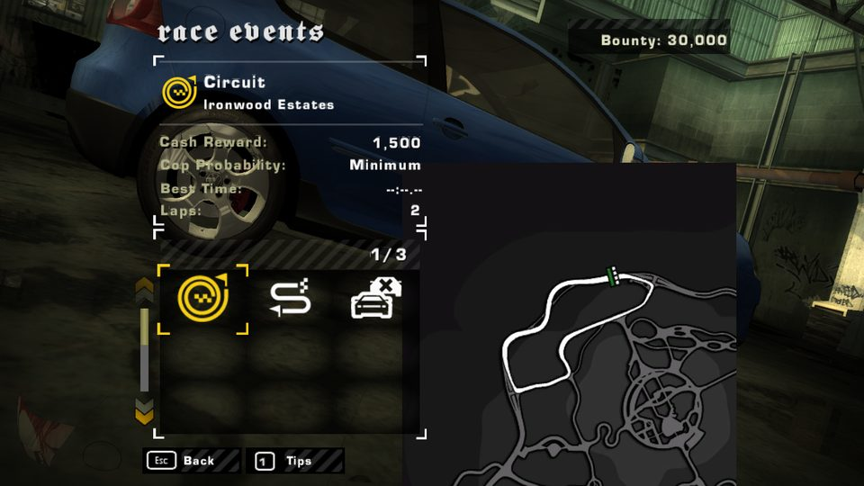
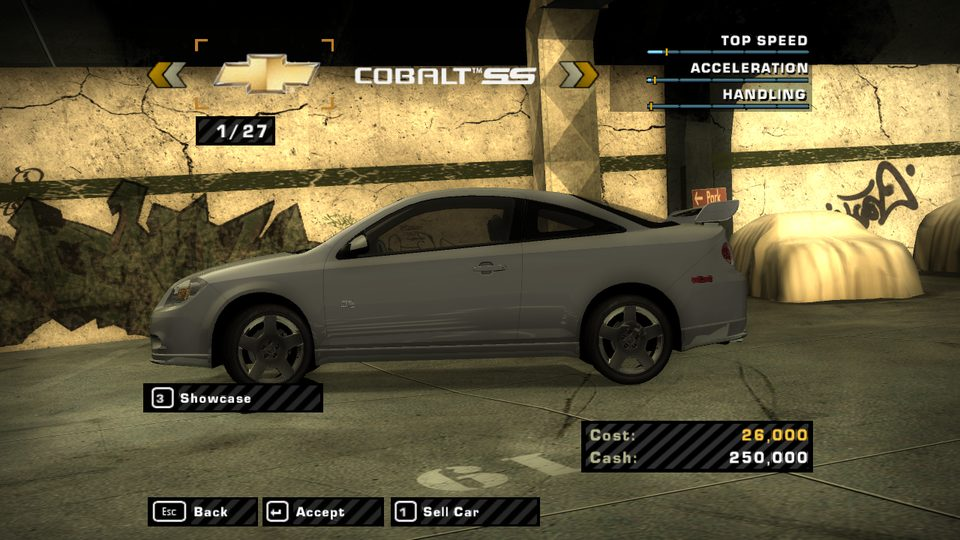

A from-scratch rebuild of the PC game, written by reverse-engineering the original speed.exe
function by function. It runs on your own installed copy: Rockport, the cars, the menus, the career scripts, the
sounds and the cutscenes are read from your game folder while it plays.

Coverage is measured against the original executable: every function in speed.exe is tied
to its original source file through the symbol table, then to the Unity code that ports it.
speed.exe v1.3, across 900+ original source filesEffective share ported, largest subsystems first (size of the original code in brackets).
The remaining partial code is mostly memory management, file loading and debug paths that Unity replaces, each accounted for function by function in the coverage report.
The rebuild running on the original data. Everything you see is drawn from the game's own files.





A playable offline game from the press-start screen to the top of the Blacklist.
Nothing from the game is converted or shipped. The rebuild opens your game's files the way
speed.exe does and runs a re-implementation of the original code on top of Unity.
Each system was reversed from the v1.3 executable with Ghidra and a disassembler, cross-checked against a public decompilation project of the GameCube build where one exists. The PC code wins wherever they differ. Every ported function cites the address it follows.
The goal is 1:1 behaviour, even where the original looks rough. Where Unity replaces something (PhysX contacts, memory management), the exact deviation is written down in the specs.
Play tests drive a career race, the Challenge Series, the prologue, split screen, LAN and the handling numbers. A screenshot tour then visits 55 menus and moments of the game.
You need Need for Speed: Most Wanted for PC, installed and patched to v1.3, plus Unity to build the rebuild.
GLOBAL, TRACKS, CARS, FRONTEND and speed.exe. The retail default is C:\Program Files (x86)\EA GAMES\Need for Speed Most Wanted.git clone https://github.com/MagicIbrar/nfsmw-unity.git
NFSMWUnity/gameroot.txt containing your game folder, for example:D:\Games\Need for Speed Most WantedThe rebuild looks in this order:
-gameRoot "<folder>" on the command line, gameroot.txt next to the player (or next to Assets in the editor), the NFSMW_ROOT environment variable, then the retail default folder.NFSMWUnity folder in Unity Hub, open Assets/Scenes/FreeRoam.unity and press Play.NFSMW > Build Windows Player. It goes to NFSMWUnity/Build/NFSMWUnity; put a gameroot.txt next to NFSMWUnity.exe and run it.| Keyboard | Action |
|---|---|
| W / Up, S / Down | Throttle, brake and reverse |
| A D / Left Right | Steer |
| Space | Handbrake |
| N or Left Ctrl | Nitrous |
| X | Speedbreaker |
| R | Reset the car |
| C / B | Change camera / look back |
| Enter / Esc | Accept and start events / pause, back, skip cutscenes |
Gamepads work too. Split screen and LAN are described in the project README.
Replace any car, world, menu or HUD texture, and any model, without touching the game's files.
The mod tool decodes the game's textures to PNG and its models to OBJ (with materials), ready for any image editor or Blender.
Repaint a texture at any size, or reshape a model. OBJ files open upright in Blender in the game's own coordinates.
ModTool import checks your file and puts it in the Mods folder. The rebuild loads it in place of the original; delete it to undo.
ModTool export-textures CARS/BMWM3GTRE46 C:\nfsmods\bmw ModTool import C:\nfsmods\bmw\CARTEXTURES\BMWM3GTRE46_BADGING.png --pack CARTEXTURES --from CARS/BMWM3GTRE46 ModTool export-models CARS/GTI C:\nfsmods\gti GTI_KIT00_BODY_A ModTool import C:\nfsmods\gti\GTI_KIT00_BODY_A.obj --from CARS/GTI
Naming rules, the coordinate frame and the limits are in MODDING.md. Please share mods as your own work only; do not redistribute the game's original files.
Need for Speed: Most Wanted was developed by EA Black Box and published by Electronic Arts in November 2005, for PC, PlayStation 2, Xbox, GameCube and as a launch title for the Xbox 360.
An open city of three boroughs (Rosewood, Camden Beach and Bayview), linked by highways and full of police, traffic and smashable pursuit breakers.
Fifteen of the city's most wanted street racers. You start at the bottom after Razor takes your BMW M3 GTR, and climb by winning races, earning bounty and completing pursuit milestones before facing each rival.
The police are the heart of the game: heat rises from patrol cars to rhinos and the helicopter, with roadblocks and spike strips. Escape, find a hiding spot and survive the cooldown, or get busted and impounded.
Career, Quick Race (circuit, sprint, lap knockout, drag, tollbooth, speed trap) and the Challenge Series of pursuit and race challenges, plus split-screen and online/LAN play.
A golden, hazy colour grade, bloom and motion blur, with live-action cutscenes blended with 3D. The rebuild keeps those visuals exactly as the original draws them.
The PC version, executable v1.3 (speed.exe). Online play is out of scope; LAN is re-implemented.
Thank you for your help with this project and the GitHub repository.
| Is any game content included? | No. The repository and the built player contain only this project's code, shaders and documentation. All textures, models, sounds, music, movies and data are read from your installed copy. |
|---|---|
| Do I need to own the game? | Yes. Without an installed copy of Need for Speed: Most Wanted (PC) the rebuild has nothing to load. |
| Does it change my game? | No. It only reads the game folder; mods live in a separate folder. |
| Who made it? | A non-commercial fan project for preservation and study, not affiliated with or endorsed by Electronic Arts. |
| Licence | The code is MIT licensed. Need for Speed and Need for Speed: Most Wanted are trademarks of Electronic Arts Inc.; the game and its content belong to their owners. |
| Can I contribute? | Yes, through pull requests on GitHub. Please never attach game files or content extracted from them. |